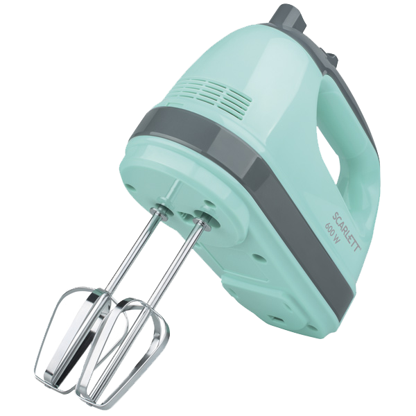

Миксер Scarlett SC-HM40S11
Готовьте соусы, быстро замешивайте блинное тесто или взбивайте яйца. Миксер Scarlett SC-HM40S11 сэкономит ваше время и силы.
ШЕСТЬ СКОРОСТЕЙ
Подбирайте скорость в зависимости от того, что вы готовите. Например, белки начинайте взбивать потихоньку, постепенно увеличивая темп. Благо, это очень удобно делать: кнопка переключения скоростей находится прямо под большим пальцем.
КОМПЛЕКТ НАСАДОК
Чтобы получить пышную массу, используйте насадки для взбивания. Их широкие, плоские лопасти отлично справятся с разными продуктами. Если вам нужно сделать тесто, то возьмите специальные насадки-крючки для смешивания.
© Все права защищены